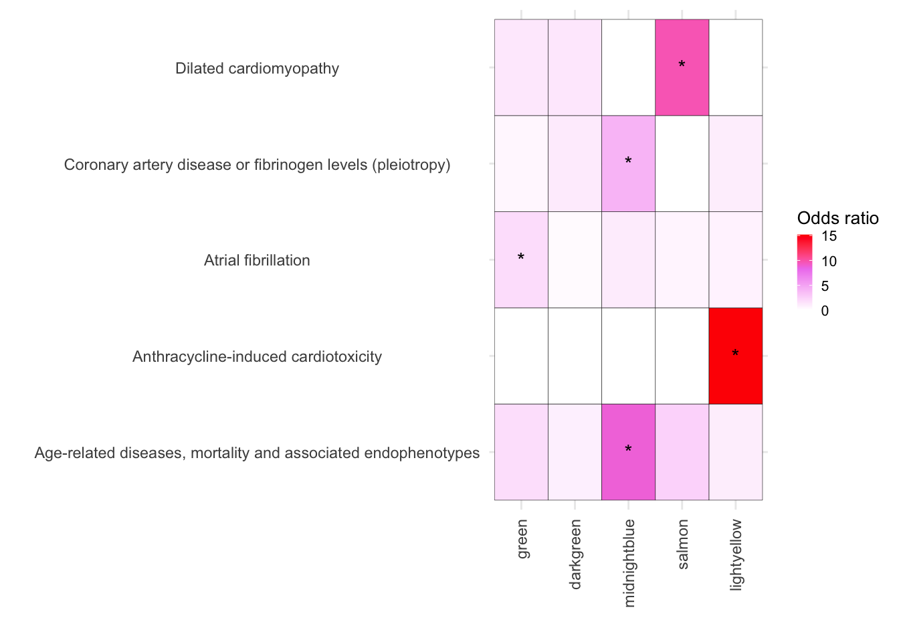
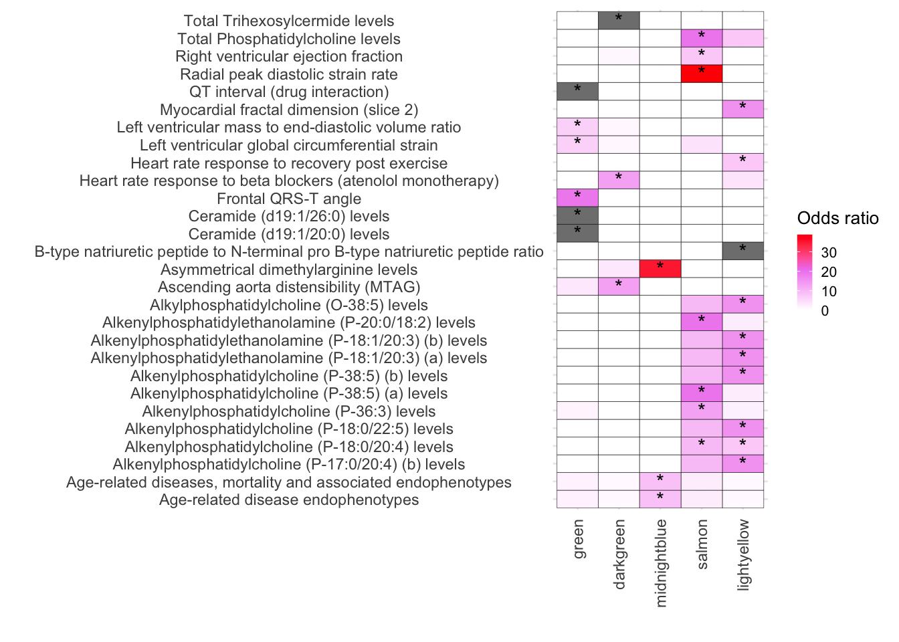
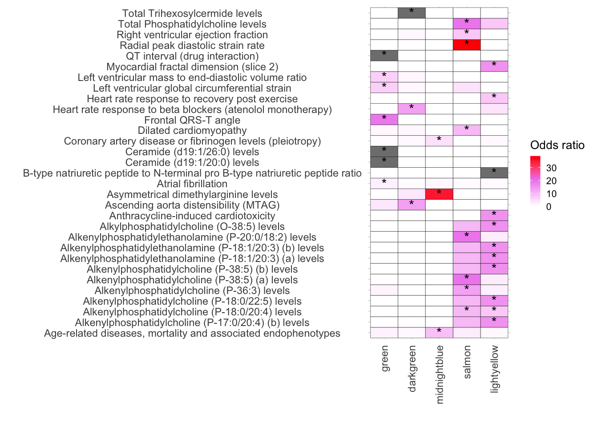
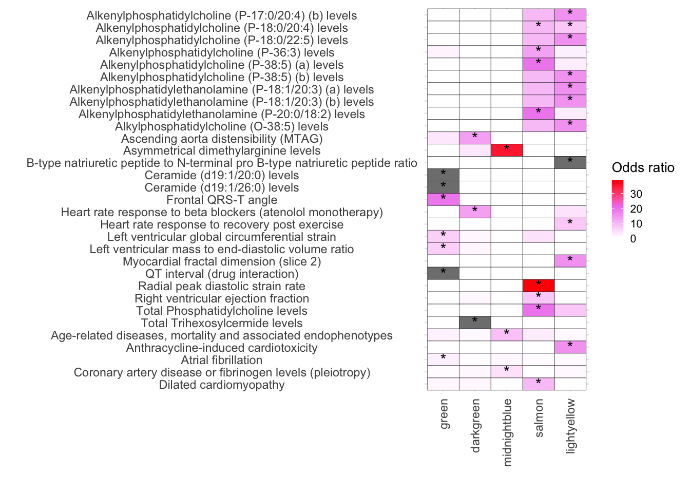

Last updated: 2024-07-23
Checks: 7 0
Knit directory: DOX_24_Github/
This reproducible R Markdown analysis was created with workflowr (version 1.7.1). The Checks tab describes the reproducibility checks that were applied when the results were created. The Past versions tab lists the development history.
Great! Since the R Markdown file has been committed to the Git repository, you know the exact version of the code that produced these results.
Great job! The global environment was empty. Objects defined in the global environment can affect the analysis in your R Markdown file in unknown ways. For reproduciblity it’s best to always run the code in an empty environment.
The command set.seed(20240723) was run prior to running
the code in the R Markdown file. Setting a seed ensures that any results
that rely on randomness, e.g. subsampling or permutations, are
reproducible.
Great job! Recording the operating system, R version, and package versions is critical for reproducibility.
Nice! There were no cached chunks for this analysis, so you can be confident that you successfully produced the results during this run.
Great job! Using relative paths to the files within your workflowr project makes it easier to run your code on other machines.
Great! You are using Git for version control. Tracking code development and connecting the code version to the results is critical for reproducibility.
The results in this page were generated with repository version 88c6686. See the Past versions tab to see a history of the changes made to the R Markdown and HTML files.
Note that you need to be careful to ensure that all relevant files for
the analysis have been committed to Git prior to generating the results
(you can use wflow_publish or
wflow_git_commit). workflowr only checks the R Markdown
file, but you know if there are other scripts or data files that it
depends on. Below is the status of the Git repository when the results
were generated:
Ignored files:
Ignored: .DS_Store
Ignored: analysis/Johnson_DOX_24_7.html
Ignored: analysis/Johnson_DOX_24_8.html
Ignored: analysis/Johnson_DOX_24_RUV_Limma.html
Untracked files:
Untracked: Fig_2.Rmd
Untracked: Fig_2.html
Untracked: analysis/Johnson_DOX_24_RUV_Limma.Rmd
Note that any generated files, e.g. HTML, png, CSS, etc., are not included in this status report because it is ok for generated content to have uncommitted changes.
These are the previous versions of the repository in which changes were
made to the R Markdown (analysis/Johnson_DOX_24_7.Rmd) and
HTML (docs/Johnson_DOX_24_7.html) files. If you’ve
configured a remote Git repository (see ?wflow_git_remote),
click on the hyperlinks in the table below to view the files as they
were in that past version.
| File | Version | Author | Date | Message |
|---|---|---|---|---|
| Rmd | 88c6686 | Omar-Johnson | 2024-07-23 | Publish the initial files for myproject |
perform_module_comparisons_mutexc_2 <- function(df, module_col, value_col) {
# Ensure the necessary columns exist
if (!(module_col %in% names(df) && value_col %in% names(df))) {
stop("Specified columns do not exist in the dataframe.")
}
# Get a list of all unique modules
modules <- unique(df[[module_col]])
# Initialize an empty list to store combined data frames
combined_df_list <- list()
# Initialize an empty dataframe to store results
results <- data.frame(Module1 = character(),
Module2 = character(),
WilcoxPValue = numeric(),
stringsAsFactors = FALSE)
# Loop through each module
for (module in modules) {
# Data for the current module
current_data <- df %>% filter(!!sym(module_col) == module) %>%
mutate(Group = as.character(module))
# Data for all other modules
other_data <- df %>% filter(!!sym(module_col) != module) %>%
mutate(Group = paste("Not", module, sep=""))
# Combine current module data with other module data
combined_data <- rbind(current_data, other_data)
# Add the combined data to the list
combined_df_list[[module]] <- combined_data
# Perform the Wilcoxon test
test_result <- wilcox.test(current_data[[value_col]], other_data[[value_col]])
# Add the results to the dataframe
results <- rbind(results, data.frame(Module1 = module,
Module2 = "Others",
WilcoxPValue = test_result$p.value))
}
return(list("results" = results, "combined_data" = combined_df_list))
}
perform_module_disease_analysis_genes_3 <- function(toptable, diseaseGenes) {
# Prepare an empty list to collect results
results <- list()
# Ensure 'Modules' and 'hgnc_symbol' columns exist in 'toptable'
if(!"Modules" %in% names(toptable)) {
stop("Column 'Modules' not found in the 'toptable'.")
}
if(!"hgnc_symbol" %in% names(toptable)) {
stop("Column 'hgnc_symbol' not found in the 'toptable'.")
}
# Filter disease genes to include only those that are expressed in toptable
expressedDiseaseGenes <- lapply(diseaseGenes, function(genes) {
intersect(genes, toptable$hgnc_symbol)
})
# Loop through each module
modules <- unique(toptable$Modules)
for (module in modules) {
# Get the genes in the module
moduleGenes <- toptable$hgnc_symbol[toptable$Modules == module]
# Loop through each disease gene set
for (diseaseName in names(expressedDiseaseGenes)) {
# Find the intersecting genes between the module and the expressed disease genes
diseaseModuleIntersect <- intersect(moduleGenes, expressedDiseaseGenes[[diseaseName]])
# Calculate elements for the contingency table
numIntersect = length(diseaseModuleIntersect)
numInModuleNotDisease = length(moduleGenes) - numIntersect
numInDiseaseNotModule = length(expressedDiseaseGenes[[diseaseName]]) - numIntersect
numInNeither = nrow(toptable) - (numIntersect + numInModuleNotDisease + numInDiseaseNotModule)
# Build the contingency table
table <- matrix(c(
numIntersect, # Both in disease list and module
numInModuleNotDisease, # In module but not disease list
numInDiseaseNotModule, # In disease list but not module
numInNeither # In neither list
), nrow = 2, byrow = TRUE)
# Perform chi-squared test and Fisher's exact test with error handling
chiSqTestResult <- tryCatch({
chisq.test(table, correct = TRUE)
}, error = function(e) {
list(p.value = NA)
}, warning = function(w) {
list(p.value = NA)
})
fisherTestResult <- tryCatch({
fisher.test(table)
}, error = function(e) {
list(p.value = NA)
}, warning = function(w) {
list(p.value = NA)
})
# Calculate percent overlap, handle division by zero
percentOverlap <- if (length(moduleGenes) > 0) {
(numIntersect / length(expressedDiseaseGenes[[diseaseName]])) * 100
} else {
0
}
# Convert intersecting genes to a single character string
intersectingGenesStr <- if (numIntersect > 0) {
paste(diseaseModuleIntersect, collapse = ";")
} else {
"" # Use an empty string to indicate no intersection
}
# Append to results list
results[[paste(module, diseaseName, sep = "_")]] <- data.frame(
Modules = module,
Disease = diseaseName,
ChiSqPValue = chiSqTestResult$p.value,
FisherPValue = fisherTestResult$p.value,
PercentOverlap = percentOverlap,
OddsRatio = fisherTestResult$estimate,
IntersectingGenes = intersectingGenesStr
)
}
}
# Combine results into a single data frame
results_df <- do.call(rbind, results)
return(results_df)
}
# Function assignment
perform_fisher_test_FP <- function(vec1, vec2, vec1_name, vec2_name, plot = FALSE) {
# Create labeled factors for vec1 and vec2
vec1_label <- factor(vec1, labels = c(paste0("Not", vec1_name), paste0("Is", vec1_name)))
vec2_label <- factor(vec2, labels = c(paste0("Not", vec2_name), paste0("Is", vec2_name)))
# Create contingency table with labeled factors
table <- table(vec1_label, vec2_label)
# Perform Fisher's exact test
test_result <- fisher.test(table)
p_value <- test_result$p.value
OR <- test_result$estimate
CI <- test_result$conf.int
# Prepare result
result <- list(
ContingencyTable = table,
PValue = p_value,
Odds_ratio = test_result$estimate,
Confidence_Interval = test_result$conf.int
)
# Generate plot if required
if (plot) {
# Convert table to data frame for ggplot
table_df <- as.data.frame(as.table(table))
colnames(table_df) <- c("vec1_label", "vec2_label", "Freq")
# Calculate totals for each vec1_label
totals <- aggregate(Freq ~ vec1_label, data = table_df, sum)
# Merge totals with table_df and calculate percentages
table_df <- merge(table_df, totals, by = "vec1_label", all.x = TRUE)
table_df$Percentage <- with(table_df, Freq.x / Freq.y * 100)
table_df$Group <- table_df$vec2_label
# Stacked bar chart
p <- ggplot(table_df, aes(x = vec1_label, y = Percentage, fill = Group)) +
geom_bar(stat = "identity", position = "stack") + # Adjust position to "stack"
facet_wrap(~ vec1_label) +
theme_minimal() +
labs(x = vec1_name, y = "Percentage", fill = vec2_name, title = paste("")) +
theme(axis.text.x = element_text(angle = 45, hjust = 1))
result$Plot <- p
}
return(result)
}
group_by_deciles <- function(x) {
deciles <- cut(x,
breaks = quantile(x, probs = seq(0, 1, by = 0.1), na.rm = TRUE),
include.lowest = TRUE,
labels = paste0("D", 1:10))
return(deciles)
}BigGWASsumstat <- read_tsv(file = File_path_1)Rows: 5709 Columns: 15
── Column specification ────────────────────────────────────────────────────────
Delimiter: "\t"
chr (13): riskAllele, pValueAnnotation, riskFrequency, orValue, beta, ci, ma...
dbl (2): pValue, pubmedId
ℹ Use `spec()` to retrieve the full column specification for this data.
ℹ Specify the column types or set `show_col_types = FALSE` to quiet this message.BigGWASsumstat$traitName %>% unique() %>% length()[1] 154BigGWASsumstat$riskAllele %>% unique() %>% length()[1] 4280BigGWASsumstat_sep <- separate_rows(BigGWASsumstat, mappedGenes, sep = ",")
BigGWASsumstat[BigGWASsumstat$traitName %in% c("Anthracycline-induced cardiotoxicity in early breast cancer","Anthracycline-induced cardiotoxicity in childhood cancer", "Anthracycline-induced cardiotoxicity in breast cancer"), ]$mappedGenes [1] "BEND4,SHISA3" "MIR548AB,NDUFA4P2" "MPP4"
[4] "RPL7" "LINC01982" "PRUNE2,PCA3"
[7] "CDH13" "RARG" "RARG"
[10] "POLRMT,FGF22" # Using gsub to remove '(MTAG)' from traitName
BigGWASsumstat_sep$traitName <- gsub(" \\(MTAG\\)", "", BigGWASsumstat_sep$traitName)
BigGWASsumstat_sep$traitName <- gsub("Anthracycline-induced cardiotoxicity in early breast cancer", "Anthracycline-induced cardiotoxicity", BigGWASsumstat_sep$traitName)
BigGWASsumstat_sep$traitName <- gsub("Anthracycline-induced cardiotoxicity in childhood cancer", "Anthracycline-induced cardiotoxicity", BigGWASsumstat_sep$traitName)
BigGWASsumstat_sep$traitName <- gsub("Anthracycline-induced cardiotoxicity in breast cancer", "Anthracycline-induced cardiotoxicity", BigGWASsumstat_sep$traitName)
BigGWASsumstat_Exp <- BigGWASsumstat_sep[BigGWASsumstat_sep$mappedGenes %in% New_RNA_PRO_DF_3$hgnc_symbol, ]
traits_genes_list <- BigGWASsumstat_Exp %>%
group_by(traitName) %>%
summarise(Genes = list(mappedGenes)) %>%
deframe()
diseaseGenes <- traits_genes_list
# Plot results
results_df <- perform_module_disease_analysis_genes_3(toptable = New_RNA_PRO_DF_3, diseaseGenes =diseaseGenes)
melted_results <- melt(results_df, id.vars = c("Modules", "Disease", "PercentOverlap", "FisherPValue","OddsRatio","IntersectingGenes" ))
# First, create a new column that indicates where to place stars
melted_results$Star <- ifelse(melted_results$FisherPValue < 0.05 & melted_results$OddsRatio > 1, "*", "")
Enriched_diseases <- melted_results[(melted_results$FisherPValue < 0.05) & (melted_results$OddsRatio > 1) & (melted_results$Modules %in% c("green","darkgreen","midnightblue","salmon","lightyellow")), ]$Disease
Disease_lists_GWAS <- melted_results$Disease %>% unique(
)
module_order <- c("green","darkgreen","midnightblue","salmon","lightyellow", "lightgreen","blue", "magenta","darkred", "brown", "yellow", "royalblue", "grey")
melted_results_2 <- melted_results[melted_results$Disease %in% c("Anthracycline-induced cardiotoxicity" ,"Dilated cardiomyopathy", "Atrial fibrillation","Age-related diseases, mortality and associated endophenotypes", "Coronary artery disease or fibrinogen levels (pleiotropy)"), ]
# Factor the Module column in Fulltrait_df
melted_results_2$Modules <- factor(melted_results_2$Modules, levels = module_order)
melted_results_3 <- melted_results_2[melted_results_2$Modules %in% c("green","darkgreen","midnightblue","salmon","lightyellow"), ]
# Vertical
ggplot(melted_results_3, aes(x = Modules, y = Disease, fill = OddsRatio)) +
geom_tile(color = "black") +
scale_fill_gradientn(colors = c("white", "violet", "red"),
values = scales::rescale(c(-10, 1, 10)),
na.value = "grey50", name = "Odds ratio") +
geom_text(aes(label = Star), color = "black", size = 4, na.rm = TRUE) +
labs(x = "", y = "") +
theme_minimal() +
theme(
axis.text.x = element_text(angle = 90, vjust = 0.5, hjust = 1),
axis.text.y = element_text(hjust = 0.5),
axis.title = element_text(size = 12),
legend.key.size = unit(0.3, 'cm'),
legend.title = element_text(size = 10),
legend.text = element_text(size = 8)
)
melted_results_3_CVD <- melted_results_3BigGWASsumstat <- read_tsv(file = File_path_2)Rows: 41479 Columns: 15
── Column specification ────────────────────────────────────────────────────────
Delimiter: "\t"
chr (13): riskAllele, pValueAnnotation, riskFrequency, orValue, beta, ci, ma...
dbl (2): pValue, pubmedId
ℹ Use `spec()` to retrieve the full column specification for this data.
ℹ Specify the column types or set `show_col_types = FALSE` to quiet this message.BigGWASsumstat_sep <- separate_rows(BigGWASsumstat, mappedGenes, sep = ",")
GWAS_Traits_to_remove <- BigGWASsumstat_sep[BigGWASsumstat_sep$mappedGenes == "-", ]$traitName %>% unique()
BigGWASsumstat_Exp <- BigGWASsumstat_sep[BigGWASsumstat_sep$mappedGenes %in% New_RNA_PRO_DF_3$hgnc_symbol, ]
traits_genes_list <- BigGWASsumstat_Exp %>%
group_by(traitName) %>%
summarise(Genes = list(mappedGenes)) %>%
deframe()
diseaseGenes <- traits_genes_list
# Plot results
results_df <- perform_module_disease_analysis_genes_3(toptable = New_RNA_PRO_DF_3, diseaseGenes =diseaseGenes)
melted_results <- melt(results_df, id.vars = c("Modules", "Disease", "PercentOverlap", "FisherPValue","OddsRatio", "IntersectingGenes" ))
# First, create a new column that indicates where to place stars
melted_results$Star <- ifelse(melted_results$FisherPValue < 0.05 & melted_results$OddsRatio > 1, "*", "")
Enriched_diseases <- melted_results[(melted_results$FisherPValue < 0.05) & (melted_results$OddsRatio > 1) & (melted_results$Modules %in% c("green","darkgreen","midnightblue","salmon","lightyellow")), ]$Disease
Disease_lists_GWAS <- melted_results$Disease %>% unique(
)
melted_results_2 <- melted_results
melted_results_2 <- melted_results_2[melted_results_2$Disease %in% Enriched_diseases, ]
module_order <- c("green","darkgreen","midnightblue","salmon","lightyellow", "lightgreen","blue", "magenta","darkred", "brown", "yellow", "royalblue", "grey")
# Factor the Module column in Fulltrait_df
melted_results_2$Modules <- factor(melted_results_2$Modules, levels = module_order)
melted_results_3 <- melted_results_2[melted_results_2$Modules %in% c("green","darkgreen","midnightblue","salmon","lightyellow"), ]
melted_results_3_Traits_removed <- melted_results_3[!melted_results_3$Disease %in% GWAS_Traits_to_remove, ]
melted_results_4_Traits_removed <- melted_results_3_Traits_removed %>%
mutate(gene_count = sapply(strsplit(IntersectingGenes, ";"), length)) %>%
filter(gene_count >= 2)
GWAS_clin_traits <- melted_results_4_Traits_removed$Disease %>% unique()
melted_results_3_Traits_removed_plot <- melted_results_3_Traits_removed[melted_results_3_Traits_removed$Disease %in%GWAS_clin_traits, ]
ggplot(melted_results_3_Traits_removed_plot, aes(x = Modules, y = Disease, fill = OddsRatio)) +
geom_tile(color = "black") +
scale_fill_gradientn(colors = c("white", "violet", "red"),
values = scales::rescale(c(-10, 1, 10)),
na.value = "grey50", name = "Odds ratio") +
geom_text(aes(label = Star), color = "black", size = 4, na.rm = TRUE) +
labs(x = "", y = "") +
theme_minimal() +
theme(
axis.text.x = element_text(angle = 90, vjust = 0.5, hjust = 1),
axis.text.y = element_text(hjust = 0.5),
axis.title = element_text(size = 12),
legend.key.size = unit(0.3, 'cm'),
legend.title = element_text(size = 10),
legend.text = element_text(size = 8)
)
#
Unique_clintrait_genes <-
strsplit(melted_results_3_Traits_removed_plot$IntersectingGenes, ";") %>% unlist() %>% unique()# Combining CVD diseases and traits together
melted_results_3_Traits_removed_plot$Disease %>% unique() [1] "Age-related disease endophenotypes"
[2] "Age-related diseases, mortality and associated endophenotypes"
[3] "Alkenylphosphatidylcholine (P-17:0/20:4) (b) levels"
[4] "Alkenylphosphatidylcholine (P-18:0/20:4) levels"
[5] "Alkenylphosphatidylcholine (P-18:0/22:5) levels"
[6] "Alkenylphosphatidylcholine (P-36:3) levels"
[7] "Alkenylphosphatidylcholine (P-38:5) (a) levels"
[8] "Alkenylphosphatidylcholine (P-38:5) (b) levels"
[9] "Alkenylphosphatidylethanolamine (P-18:1/20:3) (a) levels"
[10] "Alkenylphosphatidylethanolamine (P-18:1/20:3) (b) levels"
[11] "Alkenylphosphatidylethanolamine (P-20:0/18:2) levels"
[12] "Alkylphosphatidylcholine (O-38:5) levels"
[13] "Ascending aorta distensibility (MTAG)"
[14] "Asymmetrical dimethylarginine levels"
[15] "B-type natriuretic peptide to N-terminal pro B-type natriuretic peptide ratio"
[16] "Ceramide (d19:1/20:0) levels"
[17] "Ceramide (d19:1/26:0) levels"
[18] "Frontal QRS-T angle"
[19] "Heart rate response to beta blockers (atenolol monotherapy)"
[20] "Heart rate response to recovery post exercise"
[21] "Left ventricular global circumferential strain"
[22] "Left ventricular mass to end-diastolic volume ratio"
[23] "Myocardial fractal dimension (slice 2)"
[24] "QT interval (drug interaction)"
[25] "Radial peak diastolic strain rate"
[26] "Right ventricular ejection fraction"
[27] "Total Phosphatidylcholine levels"
[28] "Total Trihexosylcermide levels" melted_results_3_Traits_removed_plot_clean <- melted_results_3_Traits_removed_plot[!melted_results_3_Traits_removed_plot$Disease %in% c("Age-related disease endophenotypes", "Age-related diseases, mortality and associated endophenotypes"), ]
melted_results_3_Traits_removed_plot_clean$Disease %>% unique() [1] "Alkenylphosphatidylcholine (P-17:0/20:4) (b) levels"
[2] "Alkenylphosphatidylcholine (P-18:0/20:4) levels"
[3] "Alkenylphosphatidylcholine (P-18:0/22:5) levels"
[4] "Alkenylphosphatidylcholine (P-36:3) levels"
[5] "Alkenylphosphatidylcholine (P-38:5) (a) levels"
[6] "Alkenylphosphatidylcholine (P-38:5) (b) levels"
[7] "Alkenylphosphatidylethanolamine (P-18:1/20:3) (a) levels"
[8] "Alkenylphosphatidylethanolamine (P-18:1/20:3) (b) levels"
[9] "Alkenylphosphatidylethanolamine (P-20:0/18:2) levels"
[10] "Alkylphosphatidylcholine (O-38:5) levels"
[11] "Ascending aorta distensibility (MTAG)"
[12] "Asymmetrical dimethylarginine levels"
[13] "B-type natriuretic peptide to N-terminal pro B-type natriuretic peptide ratio"
[14] "Ceramide (d19:1/20:0) levels"
[15] "Ceramide (d19:1/26:0) levels"
[16] "Frontal QRS-T angle"
[17] "Heart rate response to beta blockers (atenolol monotherapy)"
[18] "Heart rate response to recovery post exercise"
[19] "Left ventricular global circumferential strain"
[20] "Left ventricular mass to end-diastolic volume ratio"
[21] "Myocardial fractal dimension (slice 2)"
[22] "QT interval (drug interaction)"
[23] "Radial peak diastolic strain rate"
[24] "Right ventricular ejection fraction"
[25] "Total Phosphatidylcholine levels"
[26] "Total Trihexosylcermide levels" melted_results_3_Traits_removed_plot %>% dim()[1] 140 9melted_results_3_Traits_removed_plot_clean %>% dim()[1] 130 9melted_results_3_Traits_removed_plot_clean$Type <- c("trait")
melted_results_3_CVD$Type <- c("disease")
TotalGWAS_DF <- rbind(melted_results_3_CVD, melted_results_3_Traits_removed_plot_clean)
TotalGWAS_DF$Type <- factor(TotalGWAS_DF$Type, levels = c("trait","disease" ) )
ggplot(TotalGWAS_DF, aes(x = Modules, y = Disease, fill = OddsRatio)) +
geom_tile(color = "black") +
scale_fill_gradientn(colors = c("white", "violet", "red"),
values = scales::rescale(c(-10, 1, 10)),
na.value = "grey50", name = "Odds ratio") +
geom_text(aes(label = Star), color = "black", size = 4, na.rm = TRUE) +
labs(x = "", y = "") +
theme_minimal() +
theme(
axis.text.x = element_text(angle = 90, vjust = 0.5, hjust = 1),
axis.text.y = element_text(hjust = 0.5),
axis.title = element_text(size = 12),
legend.key.size = unit(0.3, 'cm'),
legend.title = element_text(size = 10),
legend.text = element_text(size = 8)
)
# Add Type column to each data frame
melted_results_3_Traits_removed_plot_clean$Type <- "trait"
melted_results_3_CVD$Type <- "disease"
# Combine the data frames
TotalGWAS_DF <- rbind(melted_results_3_CVD, melted_results_3_Traits_removed_plot_clean)
# Factor the Type column
TotalGWAS_DF$Type <- factor(TotalGWAS_DF$Type, levels = c("trait", "disease"))
# Factor and order the Disease column based on Type
TotalGWAS_DF <- TotalGWAS_DF %>%
mutate(Disease = factor(Disease, levels = rev(unique(Disease[order(Type)]))))
# Plot the data
ggplot(TotalGWAS_DF, aes(x = Modules, y = Disease, fill = OddsRatio)) +
geom_tile(color = "black") +
scale_fill_gradientn(colors = c("white", "violet", "red"),
values = scales::rescale(c(-10, 1, 10)),
na.value = "grey50", name = "Odds ratio") +
geom_text(aes(label = Star), color = "black", size = 4, na.rm = TRUE) +
labs(x = "", y = "") +
theme_minimal() +
theme(
axis.text.x = element_text(angle = 90, vjust = 0.5, hjust = 1),
axis.text.y = element_text(hjust = 0.5),
axis.title = element_text(size = 12),
legend.key.size = unit(0.3, 'cm'),
legend.title = element_text(size = 10),
legend.text = element_text(size = 8)
)
sessionInfo()R version 4.2.0 (2022-04-22)
Platform: x86_64-apple-darwin17.0 (64-bit)
Running under: macOS Big Sur/Monterey 10.16
Matrix products: default
BLAS: /Library/Frameworks/R.framework/Versions/4.2/Resources/lib/libRblas.0.dylib
LAPACK: /Library/Frameworks/R.framework/Versions/4.2/Resources/lib/libRlapack.dylib
locale:
[1] en_US.UTF-8/en_US.UTF-8/en_US.UTF-8/C/en_US.UTF-8/en_US.UTF-8
attached base packages:
[1] grid stats4 stats graphics grDevices utils datasets
[8] methods base
other attached packages:
[1] scales_1.2.1
[2] ReactomePA_1.40.0
[3] impute_1.70.0
[4] WGCNA_1.72-1
[5] fastcluster_1.2.3
[6] dynamicTreeCut_1.63-1
[7] BioNERO_1.4.2
[8] reshape2_1.4.4
[9] ggridges_0.5.4
[10] biomaRt_2.52.0
[11] ggvenn_0.1.10
[12] UpSetR_1.4.0
[13] DOSE_3.22.1
[14] variancePartition_1.26.0
[15] clusterProfiler_4.4.4
[16] pheatmap_1.0.12
[17] qvalue_2.28.0
[18] Homo.sapiens_1.3.1
[19] TxDb.Hsapiens.UCSC.hg19.knownGene_3.2.2
[20] org.Hs.eg.db_3.15.0
[21] GO.db_3.15.0
[22] OrganismDbi_1.38.1
[23] GenomicFeatures_1.48.4
[24] AnnotationDbi_1.58.0
[25] cluster_2.1.4
[26] ggfortify_0.4.16
[27] lubridate_1.9.2
[28] forcats_1.0.0
[29] stringr_1.5.0
[30] dplyr_1.1.2
[31] purrr_1.0.2
[32] readr_2.1.4
[33] tidyr_1.3.0
[34] tibble_3.2.1
[35] ggplot2_3.4.3
[36] tidyverse_2.0.0
[37] RColorBrewer_1.1-3
[38] RUVSeq_1.30.0
[39] edgeR_3.38.4
[40] limma_3.52.4
[41] EDASeq_2.30.0
[42] ShortRead_1.54.0
[43] GenomicAlignments_1.32.1
[44] SummarizedExperiment_1.26.1
[45] MatrixGenerics_1.8.1
[46] matrixStats_1.0.0
[47] Rsamtools_2.12.0
[48] GenomicRanges_1.48.0
[49] Biostrings_2.64.1
[50] GenomeInfoDb_1.32.4
[51] XVector_0.36.0
[52] IRanges_2.30.1
[53] S4Vectors_0.34.0
[54] BiocParallel_1.30.4
[55] Biobase_2.56.0
[56] BiocGenerics_0.42.0
[57] workflowr_1.7.1
loaded via a namespace (and not attached):
[1] rappdirs_0.3.3 rtracklayer_1.56.1 minet_3.54.0
[4] R.methodsS3_1.8.2 coda_0.19-4 bit64_4.0.5
[7] knitr_1.43 aroma.light_3.26.0 DelayedArray_0.22.0
[10] R.utils_2.12.2 rpart_4.1.19 data.table_1.14.8
[13] hwriter_1.3.2.1 KEGGREST_1.36.3 RCurl_1.98-1.12
[16] doParallel_1.0.17 generics_0.1.3 preprocessCore_1.58.0
[19] callr_3.7.3 RhpcBLASctl_0.23-42 RSQLite_2.3.1
[22] shadowtext_0.1.2 bit_4.0.5 tzdb_0.4.0
[25] enrichplot_1.16.2 xml2_1.3.5 httpuv_1.6.11
[28] viridis_0.6.4 xfun_0.40 hms_1.1.3
[31] jquerylib_0.1.4 evaluate_0.21 promises_1.2.1
[34] fansi_1.0.4 restfulr_0.0.15 progress_1.2.2
[37] caTools_1.18.2 dbplyr_2.3.3 htmlwidgets_1.6.2
[40] igraph_1.5.1 DBI_1.1.3 ggnewscale_0.4.9
[43] backports_1.4.1 annotate_1.74.0 aod_1.3.2
[46] deldir_1.0-9 vctrs_0.6.3 abind_1.4-5
[49] cachem_1.0.8 withr_2.5.0 ggforce_0.4.1
[52] vroom_1.6.3 checkmate_2.2.0 treeio_1.20.2
[55] prettyunits_1.1.1 ape_5.7-1 lazyeval_0.2.2
[58] crayon_1.5.2 genefilter_1.78.0 labeling_0.4.2
[61] pkgconfig_2.0.3 tweenr_2.0.2 nlme_3.1-163
[64] nnet_7.3-19 rlang_1.1.1 lifecycle_1.0.3
[67] downloader_0.4 filelock_1.0.2 BiocFileCache_2.4.0
[70] rprojroot_2.0.3 polyclip_1.10-4 graph_1.74.0
[73] Matrix_1.5-4.1 aplot_0.2.0 NetRep_1.2.7
[76] boot_1.3-28.1 base64enc_0.1-3 GlobalOptions_0.1.2
[79] whisker_0.4.1 processx_3.8.2 png_0.1-8
[82] viridisLite_0.4.2 rjson_0.2.21 bitops_1.0-7
[85] getPass_0.2-2 R.oo_1.25.0 ggnetwork_0.5.12
[88] KernSmooth_2.23-22 blob_1.2.4 shape_1.4.6
[91] jpeg_0.1-10 gridGraphics_0.5-1 reactome.db_1.81.0
[94] graphite_1.42.0 memoise_2.0.1 magrittr_2.0.3
[97] plyr_1.8.8 gplots_3.1.3 zlibbioc_1.42.0
[100] compiler_4.2.0 scatterpie_0.2.1 BiocIO_1.6.0
[103] clue_0.3-64 intergraph_2.0-3 lme4_1.1-34
[106] cli_3.6.1 patchwork_1.1.3 ps_1.7.5
[109] htmlTable_2.4.1 Formula_1.2-5 mgcv_1.9-0
[112] MASS_7.3-60 tidyselect_1.2.0 stringi_1.7.12
[115] highr_0.10 yaml_2.3.7 GOSemSim_2.22.0
[118] locfit_1.5-9.8 latticeExtra_0.6-30 ggrepel_0.9.3
[121] sass_0.4.7 fastmatch_1.1-4 tools_4.2.0
[124] timechange_0.2.0 parallel_4.2.0 circlize_0.4.15
[127] rstudioapi_0.15.0 foreign_0.8-84 foreach_1.5.2
[130] git2r_0.32.0 gridExtra_2.3 farver_2.1.1
[133] ggraph_2.1.0 digest_0.6.33 BiocManager_1.30.22
[136] networkD3_0.4 Rcpp_1.0.11 broom_1.0.5
[139] later_1.3.1 httr_1.4.7 ComplexHeatmap_2.12.1
[142] GENIE3_1.18.0 Rdpack_2.5 colorspace_2.1-0
[145] XML_3.99-0.14 fs_1.6.3 splines_4.2.0
[148] statmod_1.5.0 yulab.utils_0.0.8 RBGL_1.72.0
[151] tidytree_0.4.5 graphlayouts_1.0.0 ggplotify_0.1.2
[154] xtable_1.8-4 jsonlite_1.8.7 nloptr_2.0.3
[157] ggtree_3.4.4 tidygraph_1.2.3 ggfun_0.1.2
[160] R6_2.5.1 Hmisc_5.1-0 pillar_1.9.0
[163] htmltools_0.5.6 glue_1.6.2 fastmap_1.1.1
[166] minqa_1.2.5 codetools_0.2-19 fgsea_1.22.0
[169] utf8_1.2.3 sva_3.44.0 lattice_0.21-8
[172] bslib_0.5.1 network_1.18.1 pbkrtest_0.5.2
[175] curl_5.0.2 gtools_3.9.4 interp_1.1-4
[178] survival_3.5-7 statnet.common_4.9.0 rmarkdown_2.24
[181] munsell_0.5.0 GetoptLong_1.0.5 DO.db_2.9
[184] GenomeInfoDbData_1.2.8 iterators_1.0.14 gtable_0.3.4
[187] rbibutils_2.2.15